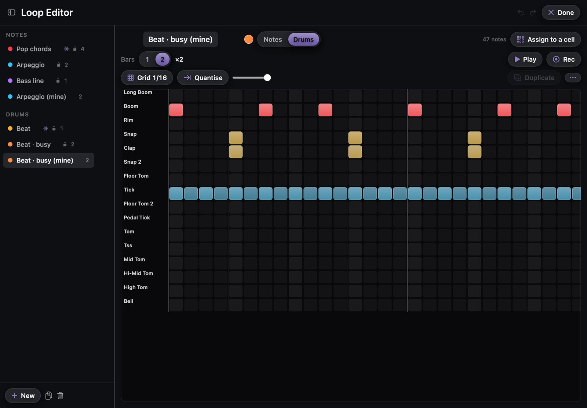
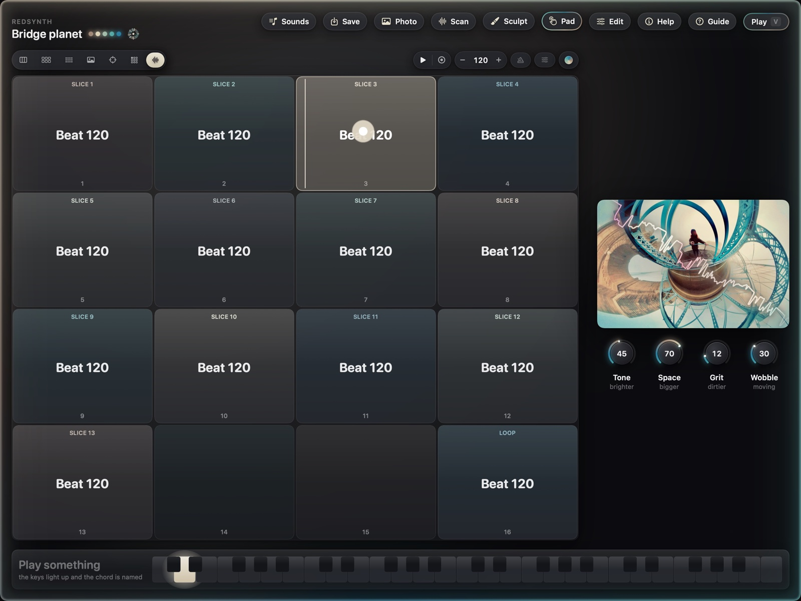
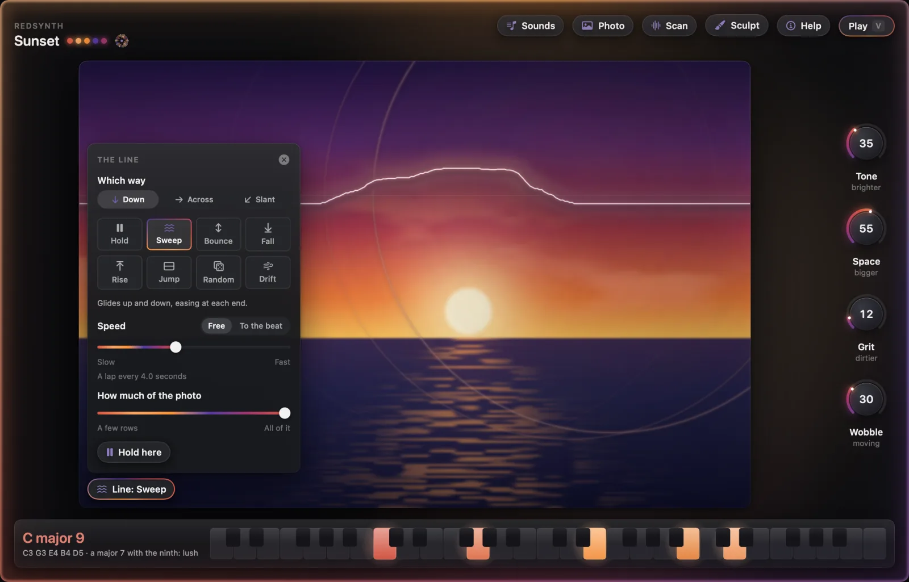
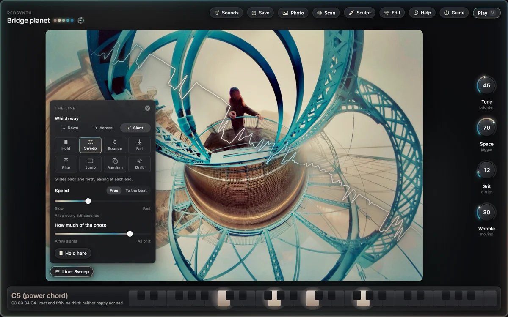
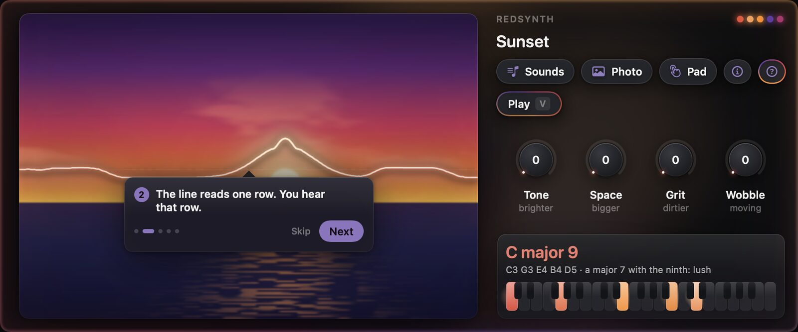

Try this
Ten things to make, one small step at a time. Each step says what you'll see, so you know it worked. Where the iPhone, iPad and Mac differ, the recipe says so.
- Record a beat and play over it
- Your first sample pad
- Stack three photos into a space
- Make the line move
- Chords from a photo
- Touch FX while you play keys
- Save a sound and send it to a friend
- Use it in GarageBand
- Sculpt the sound by hand
- Every knob, when you want it
Record a beat and play over it#
- Make an empty drum loop. Choose Loops on the pad. Open the Loop Editor from the bar above the pad (on an iPhone, the sliders icon). Tap New, and under Drums choose 1 bar. Tap Done.You'll see an empty grid of steps in the editor. Your new loop is the one you'll record into.
- Start recording. Press the record button, the circle beside play.You'll hear one bar of clicks first, the count-in, if nothing was playing. Then the loop starts going round. The count-in isn't recorded.
- Play the drums. Switch the pad to Drums and tap out a beat. Try Boom, bottom left, on beats one and three, and Snap or Clap in between. Land higher on a pad to hit harder.You'll hear what you played come back each time the bar comes round. Anything you add goes on top.
- Stop recording. Go back to Loops and press record again.You'll see the take end. The clock keeps running, but your beat goes quiet: it isn't on the grid yet.
- Put it on the grid. Open the Loop Editor. Your beat is there as a grid of steps: tap an empty step to add a hit, double-tap one to remove it. Tap Assign to a cell (on an iPhone, Cell), pick an empty column, then Done. Tap that cell.You'll see the cell's ring fill while it waits, and the beat start on the next bar.
- Play over it. Switch to Photo, Lanes or Chords and play.You'll see the beat keep going whatever mode you're in. Tap its cell again to stop it at the end of the bar.

- iPhoneThe bar above the pad shows icons only: play, record, the tempo, the metronome (count-in and click) and the sliders, which open the Loop Editor.
- MacPlay › Record a Loop (⌘⇧R) starts and ends a take from any mode. ⌘L opens the Loop Editor.
- The metronome button sets the count-in (Off, 1 bar, 2 bars), the click and the tempo.

Next, try: your own sounds on the pads · more about loops and scenes
Your first sample pad#
- Open the Sample Editor. Choose Samples on the pad, then Sample Editor in the bar above it.You'll see "No samples yet", with Record and Import.
- Get a sound in. Tap Record and choose 1 bar at the clock's tempo (or 2, 4 or 8 bars, or Until Stop). Beatbox, clap, or say a phrase. Or tap Import and pick a WAV, AIFF, MP3 or M4A of up to a minute.You'll see your device ask to use the microphone the first time. If nothing was playing, a count-in comes first. Then the waveform grows as you record, and stops by itself after the bars you chose.
- Cut it up. In the slices card, tap By onsets.You'll see a marker at every hit. Tap a slice to hear it. Move the slider beside the button for more or fewer cuts, or use Grid 8 or Grid 16 to cut evenly.
- Fill the pads. In the bank, tap Fill pads from the slices, then Done.You'll see the slices land on the sixteen slots in order.
- Play the chops. Tap the pads. Land higher for louder.You'll hear each pad play its slice, through the same effects as the synth.


- MacDrop a sound file onto the Sample Editor, or press ⌘I to import.
- iPhoneThe Sample Editor button is the sliders icon in the bar above the pad.
- In a plugin there's no microphone: Apple doesn't let plugins record. In version 1.0 the plugin can't see the app's samples either. Record, slice and play them in the app.
Next, try: a beat to play the chops over · every Sample Editor control
Stack three photos into a space#
- Add the first photo. Tap Photo and choose one. This one is the front.You'll see the photo taken apart for twenty seconds while you hear it. Tap to skip.
- Add the second. Tap Photo again. It's a menu now. Choose Add a second photo. This one is the side.You'll see "Making the space…" for a few seconds. Then the photos fly to their walls, a cloud forms and a loop draws itself.
- Add the third. From the same menu, choose Add a third photo: the view from above.You'll see the room shaped from three sides, with the third photo as its floor.
- Play it. Play the pad or a keyboard.You'll see a shell of light leave the mallet with each note. You'll hear the block ring and the loop sing through it.
- Move through it. Drag empty space to turn the room. Drag the loop to move it through the block. Tap the cloud to strike it right there.You'll see the thin wave under the space change as the loop moves. That wave is what you hear.
- Shape it. The slider button on the space opens its controls. Set Drift to 0 so the loop stays where you put it, then try Size and Shape.
- MacQuicker: drag two or three photos onto the window together, or choose several in the file window. The first is the front, the second the side, the third the top.
- iPhoneiPadThe photo picker takes one at a time, so add them from the Photo menu as above. On an iPhone the photo button is at the top, beside Play.
- Good trios are clearly different: a smooth one, a busy one, a warm one. Three similar photos make a plain space.
Next, try: painting the space's matter · how a space works
Make the line move#
- Play the photo as Scan. A new photo plays as Strike. Open How the photo plays, the button that reads Strike, and choose Scan.You'll see the button read Scan. Now the glowing line chooses what you hear.
- Open the Line panel. Tap Line in the photo's bottom-left corner.You'll see the panel called The line.
- Pick a move. Sweep, Bounce, Fall, Rise, Jump, Random or Drift. Hold a note.You'll see the line travel over the photo and the corner pill say its move, for example Line: Sweep. The tone changes as it goes.
- Set the speed. Free is a slider from Slow to Fast; the panel says how long one lap takes. To the beat makes a lap a note length at the tempo.
- Choose how much of the photo. How much of the photo runs from a few rows to all of it.
- Turn the line. Under Which way, choose Down, Across or Slant.You'll see the line stand upright for Across and run corner to corner for Slant. The same photo sounds different each way. Hold here stops the line where it is.


- iPhoneHow the photo plays is in the … menu, as Plays as. The Line panel rises from the bottom.
- Under Strike the panel says the line plays in Scan, and offers Switch to Scan.
Next, try: recording the line's journey in GarageBand · the Line panel in full
Chords from a photo#
- Choose Chords. Switch the pad to Chords.You'll see two rows of chord names. Three-note chords are on top, richer seventh chords underneath. The home chord is tinted.
- Set the key. Use the note name and the scale above the pad. New to this? Leave the scale on Major.You'll see the names change to the chords of that key. Every one fits with the others.
- Touch a cell. The whole chord plays, through your photo.You'll hear the chord played by your photo. On an iPad or Mac, the strip at the bottom names it.
- Strum and move. Drag across a cell to strum it. Slide into the next cell to change chord.You'll hear the notes the two chords share keep ringing; only the others change.
- Open it up. Turn up Space for echoes and reverb, and Wobble for slow movement.
Next, try: a beat under the chords · the key and scales
Touch FX while you play keys#
- Connect a keyboard. Plug it in, or pair a Bluetooth MIDI keyboard in your device's settings. There's nothing to set up in the app.You'll hear the notes straight away.
- Choose Touch FX on the pad.You'll see six tiles, Filter, Delay, Repeat, Gate, Crush and Reverb, above one big pad.
- Pick Delay. Play a few notes on the keyboard with one hand.
- Touch the pad with the other. Move your finger around.You'll hear echoes only while your finger is down. Left to right sets their length, in notes of the tempo; up and down, how many. Lift, and they ease out.
- Try the others. Filter: left of the middle muffles, right of it thins. Repeat catches a slice of sound and loops it. Gate chops it in time.

- MacThe trackpad is the pad. Rest the pointer over it, or press Hold the pointer (⌘⇧T) so it stays put; Esc frees it.
- No keyboard? Start a loop in Loops first, then play Touch FX over it.
Next, try: what each part of a keyboard does · every effect, both directions
Save a sound and send it to a friend#
- Make a sound you like. A photo, a turned knob, a painted stroke: whatever you hear now is what gets saved.
- Open Save. Tap Save at the top.You'll see Save this sound, with a Name and Goes under, the group it's filed in. A photo sound goes under Photo.
- Save it. Change the name if you like, then tap Save to My sounds.You'll see it in Sounds, under My sounds. It keeps every knob, the photos and the sculpt.
- Send it. Open Save again and tap Send this sound…. Choose AirDrop, Messages, Mail or Files.You'll see the Share sheet with one file, named after the sound.
- Your friend opens it. They tap the file on a device with RedSynth Pad.They'll see the sound open in RedSynth Pad, added to their My sounds, and playing.

- iPhoneSave is in the … menu: Save in My sounds…
- MacSound › Save Sound… or ⌘S.
- From the list: in Sounds, open a group under My sounds. Each of your sounds has a ⋯ with Send…, Rename and Delete.
- Changed it later? Save again: Save keeps the changes, Save as new keeps both.
Next, try: changing every knob · all about sounds
Use it in GarageBand#
- Open RedSynth Pad once. That tells your Mac the plugin exists. If GarageBand was open, quit it and open it again.
- Make a track. In GarageBand, create a project with a Software Instrument track.
- Open Smart Controls (press B), and click the instrument slot in the plug-in area on the left.
- Choose the plugin. AU Instruments › RedSynth › RedSynth Pad.You'll see the plugin's name in the slot. Click it to open its window.
- Give it a photo and play. Click Photo, or drop a picture on the plugin's window. Its Pad button shows the pad.You'll see the same instrument as the app, in a smaller window. The photo is saved inside the song.
- Record. Record the track as usual. To record a knob's movement, use the track's automation: the macros, Scan and the space's loop are all there.

- In a plugin there's no Edit button (GarageBand's parameter list has every control) and no microphone.
- If AU Instruments is missing, look in GarageBand › Settings › Audio/MIDI for Enable Audio Units.
Next, try: a moving line to record · GarageBand and MIDI in full
Sculpt the sound by hand#
- Add one photo. Two or three photos make a space, which Sculpt paints differently (below).
- Open Sculpt, the brush at the top.You'll see the photo big, the tools along the bottom, and above them a row of lines: the object's tones.
- Paint a ripple. Choose Ripple and drag across the photo. If you have a keyboard, hold a note while you paint.You'll see stripes appear, and a new line among the tones. A regular pattern is a tone, so you've painted a new ringing tone.
- Change it. Move Apart and paint again: closer stripes make a higher tone. Paint lays a colour; enough of one moves the vowel. Restore brings the photo back under the brush.
- Hear it. Tap Done and play.You'll hear the object with your tones in it. Undo takes back one stroke at a time.
- Keep it. Save it to My sounds. The sculpt is saved with the sound.

- iPhoneSculpt is in the … menu. The brush's settings rise from the bottom.
- iPadAn Apple Pencil's pressure is the brush's strength.
- MacScroll to size the brush.
- On a space, you paint materials into the block instead: Lead makes tones fall, Crystal makes them rise. See Sculpt.
Next, try: a space to sculpt · every brush and tool
Every knob, when you want it#
- Open Edit. Tap Edit at the top.You'll see every control of the sound, in cards, with the pad still playable.
- Find a control. Type in the search field, for example cutoff or delay.You'll see the matching knobs, from every page.
- Turn it while you play. Drag a knob up or down. Double-tap it to put it back.You'll see its value under it, in plain units, and an Edited mark by the sound's name.
- Look around. The pages are Sound, Motion, Effects, Photo, Drums and Setup. On Effects, each effect's on switch is in its card's title.
- Ask what it does. Tap Help: every control gets one line under it saying what it does.
- Keep it. Save it to My sounds, so it's there by name next time.

- iPhone… › Edit the sound. It opens as a sheet under the pad; drag it up for the full height. The pages are icons.
- iPadA panel beside the instrument.
- MacA window of its own: Sound › Edit Sound or ⌘E. Double-click a knob to reset it.
Next, try: saving what you made · every control in one line